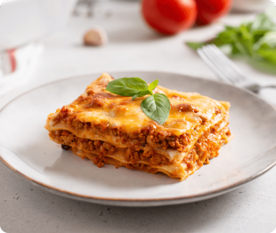

Greenbeans with Cherry Tomatoes Recipe
Greenbeans With Cherry Tomatoes Recipe, by Starnetsa

Recipe
Greenbeans with Cherry Tomatoes
These beans are briefly boiled and tossed with cherry tomatoes in a buttery basil sauce to make the most yummy green beans ever! We serve these at Easter Dinner every year but are a delicious accent to any meal.
Directions
- Cook the ground-beaf and pork in a large non-stick pan over medium-high heat. Cook until golden while stirring to breakup the meat. Remove the pan and drain the excess greese.
- Add the onion and garlic to the pan and cook until golden brown, mix in the pasta sauce along with browned meat mixture; Bring to a boil and cook for 2 to 3 minutes more. Remove from heat and let cool for a few minutes.
- In the meantime, combine ricotta cheese, parmesan cheese and spinach in a medium bowl.
- Cover the bottom of a large baking dish with lasagna pasta and place one third of the ground beef mixture over the lasagna noodles, spread evenly. Cover with half of the riccota mixture.
- Repeat this layer process twice and cover with grated mozzarella cheese. Bake covered for 30-40 minuetes at 350° until heated through, and bake uncovered for an additional 10 minuetes until top cheese is light-brown. Sprinkle fresh chopped parsley if desired.
Ingredients
- 1 pound minced meat
- 1 pound minced pork
- 1 medium sized onion, chopped, about 1 cup
- 1 large clove garlic, finely chopped
- 48 ounces of Nueman's of Marinar or Tomato Basil pasta sauce
- 15 ouces of ricotta cheese
- 1 cup grated parmesan cheese
- 12 ouces of chopped spinach
- 15 cooked lasagna noodles (3/4 of a 16-ounce package)
- 2 cups of grated mozzarella cheese
- Finely chopped parseley, optional